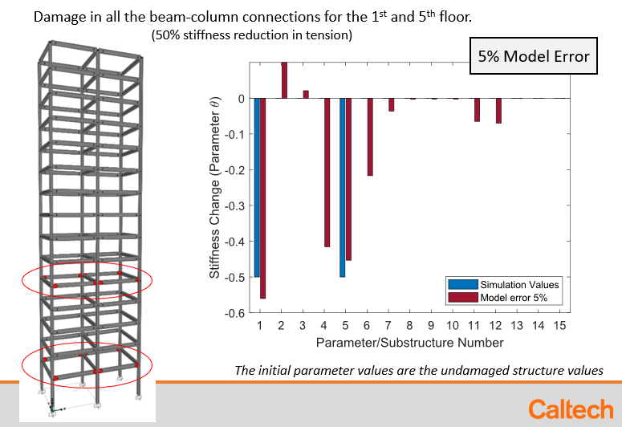

Structural Control and Health Monitoring Paper Available Online
Our recent work is now available online in Structural Control and Health Monitoring.
The paper contains our developed structural damage identification methodology, which allows detection, localization, and quantification of damage in a structure. The method is based on sparse Bayesian learning and integrates information from nonlinear FEM models with information contained in dense seismic array measurements. Simulated damage scenarios were studied, and yield promising results in identifying even extreme cases of damage, under sever model and measurement errors.

Figure: Scenario examined with damage in multiple stories under 5% model error.